CHAPTER 05
Kita kembali ke masa kini.
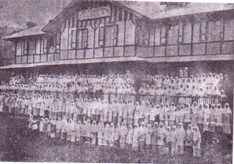
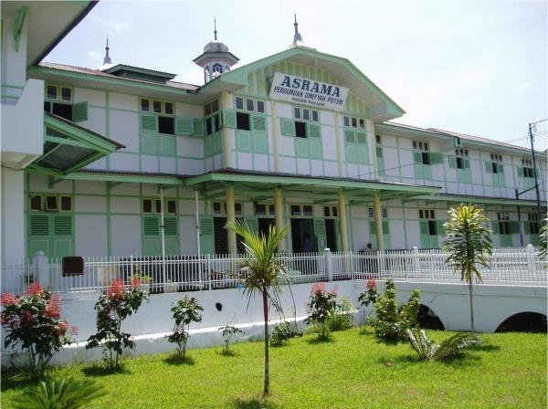
Tarik andong untuk menyusuri perjalanan waktu.
Perjalanan Dimulai dari Masa Lalu
Mengenal jejak awal perjalanan Diniyyah Puteri.
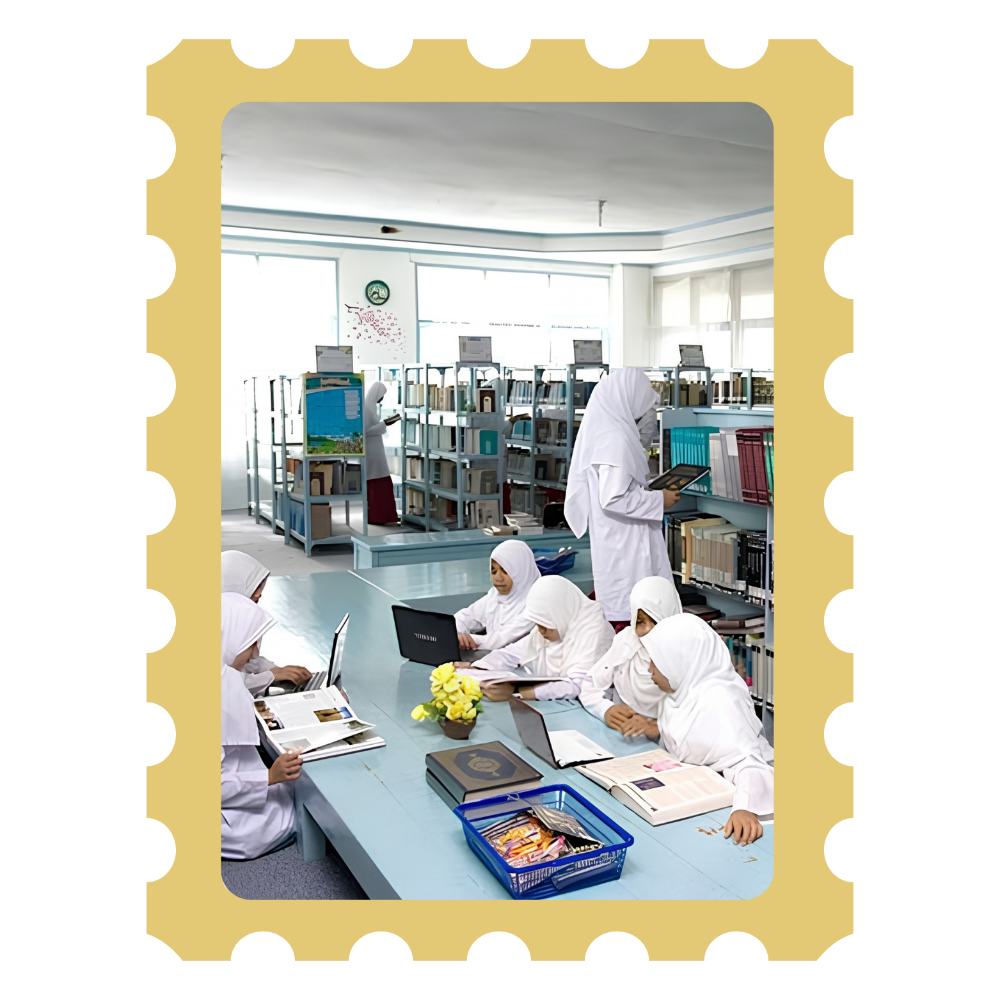
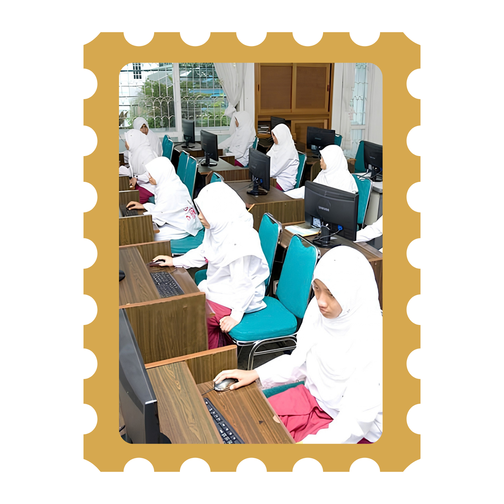
Di ruang belajar, para santri tidak hanya membaca dan memahami pelajaran
tetapi juga menemukan hal baru, mencoba, dan mengembangkan potensi diri.
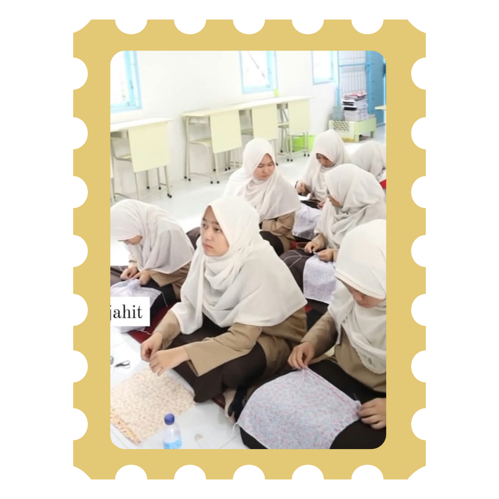
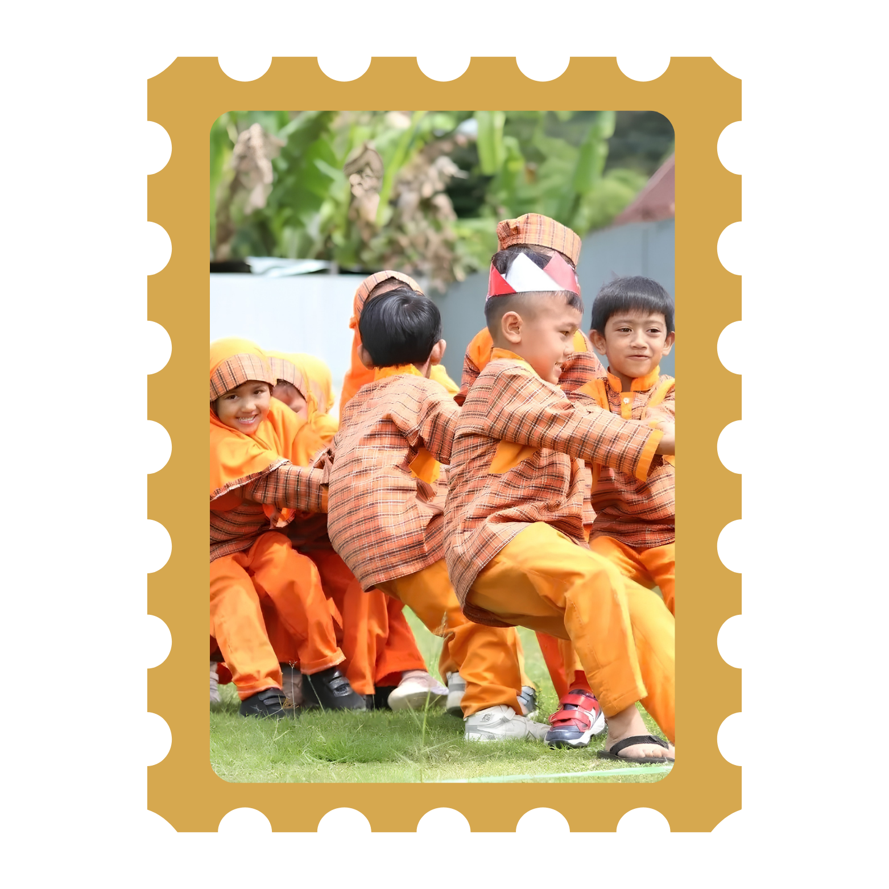
Dalam kesehariannya, mereka belajar tentang kemandirian, kebersamaan, kreativitas, dan teknologi.
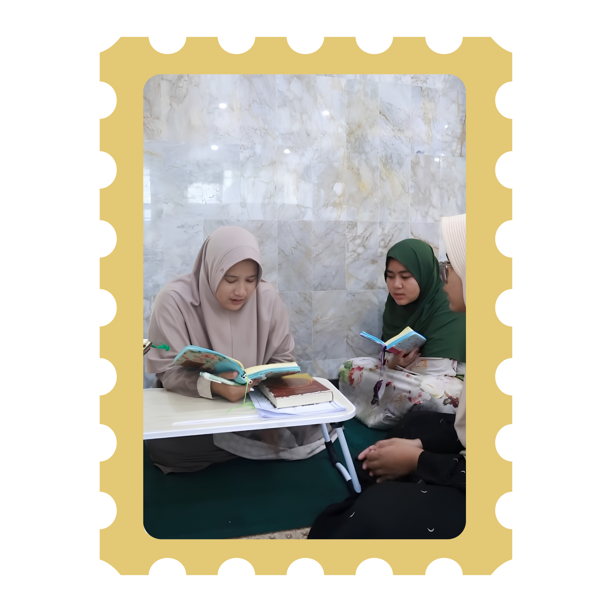
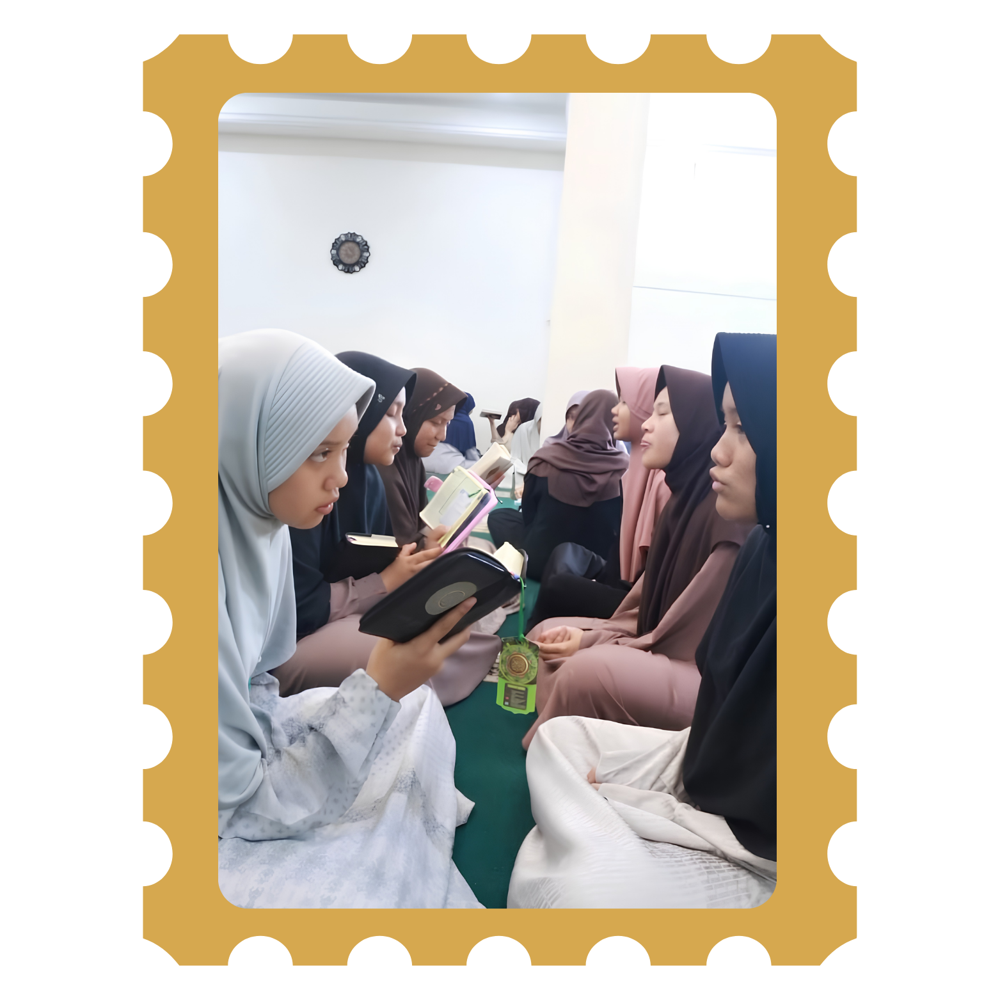
Di tengah perkembangan zaman, Diniyyah Puteri terus menjadi ruang bagi para santri untuk bertumbuh tanpa melupakan nilai-nilai yang telah diwariskan.
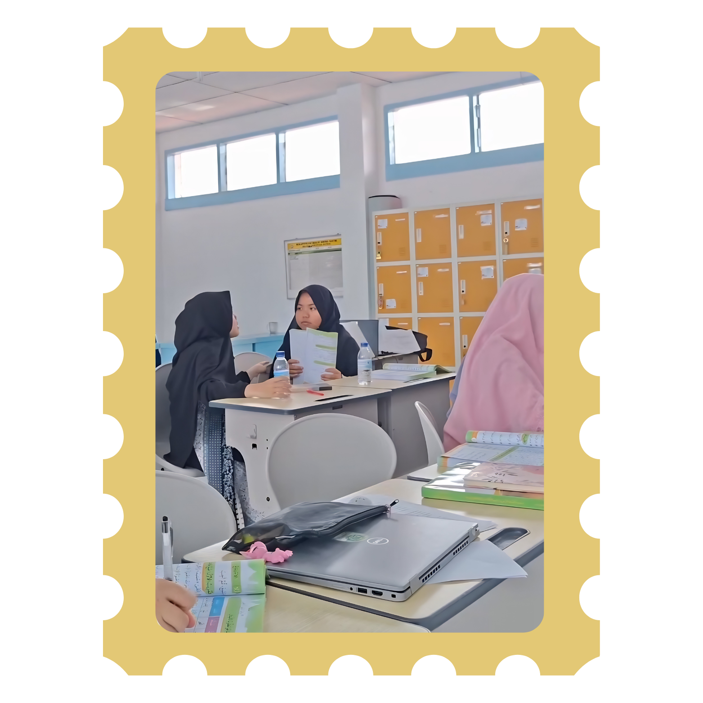
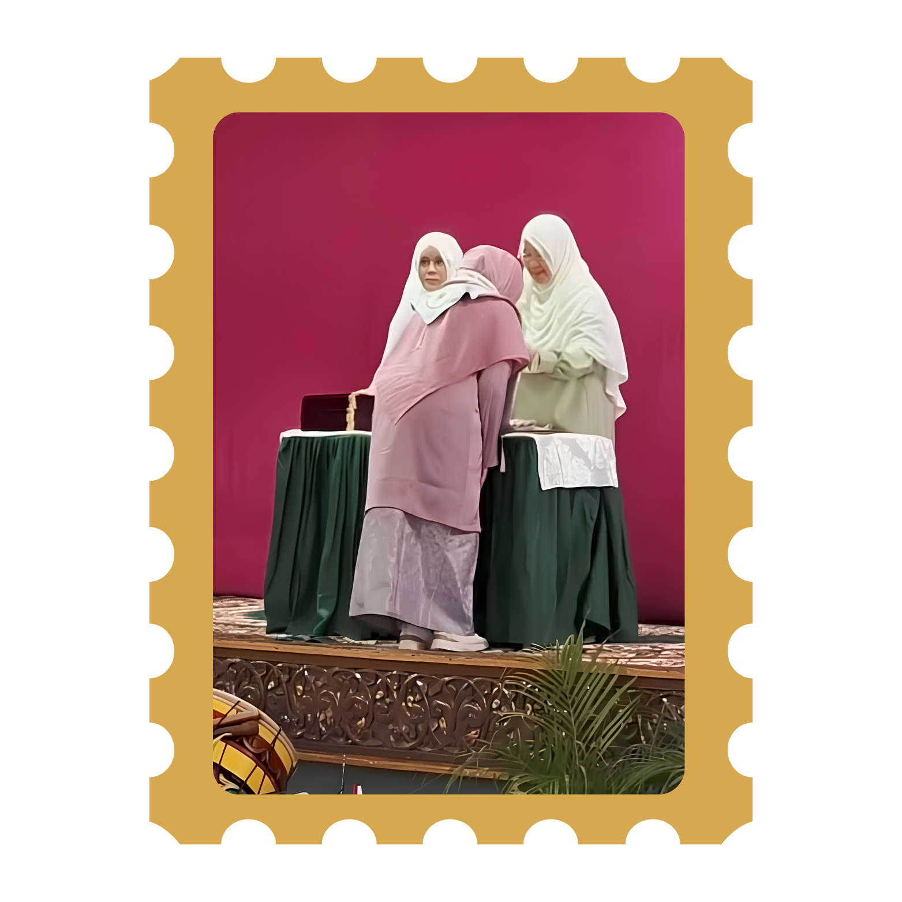
Karena pendidikan bukan hanya tentang hari ini, tetapi tentang mempersiapkan langkah menuju masa depan.
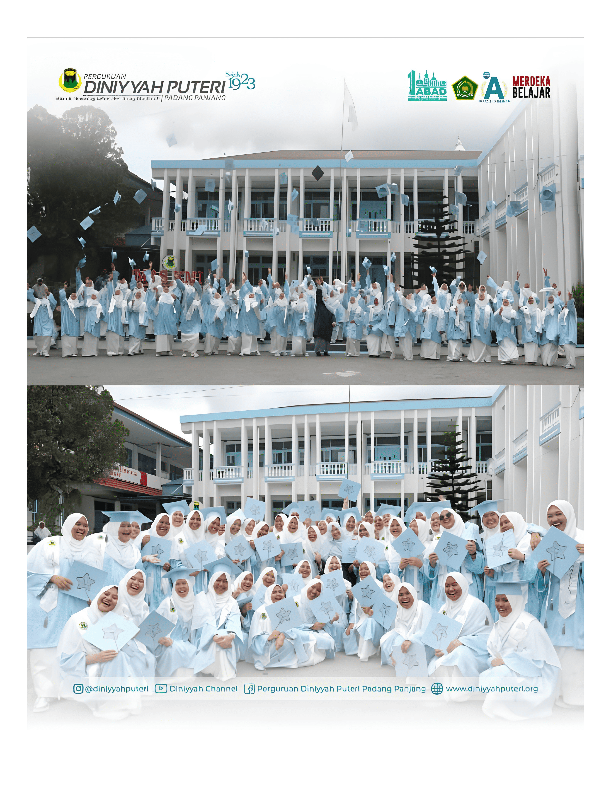
Masa lalu, cerita yang terus hidup.
Apa yang dimulai pada masa lalu kini hadir dalam bentuk yang berbeda. Tidak lagi hanya menjadi sesuatu yang tersimpan dalam arsip, tetapi telah menjadi bagian dari kehidupan yang terus berlangsung.